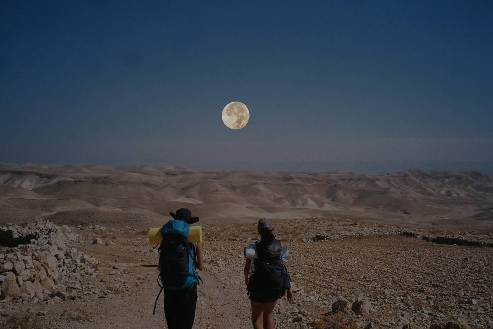
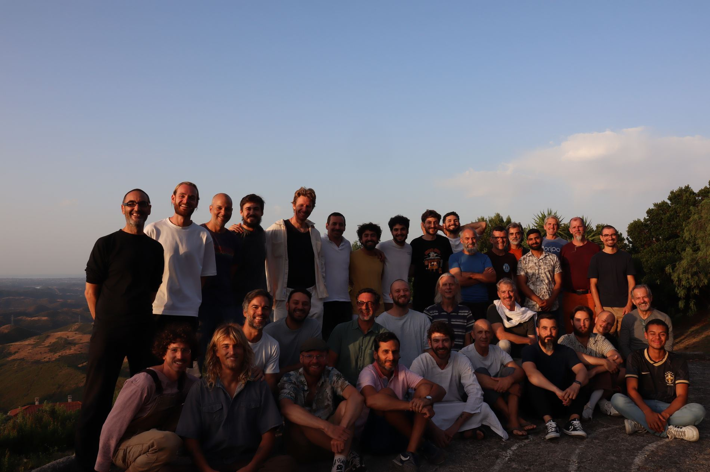
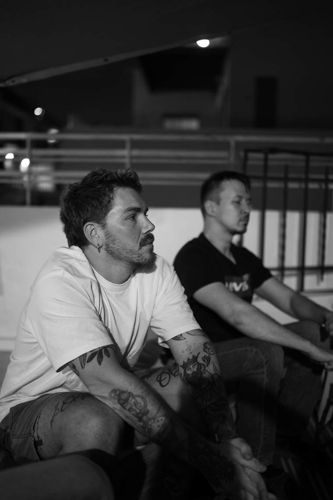
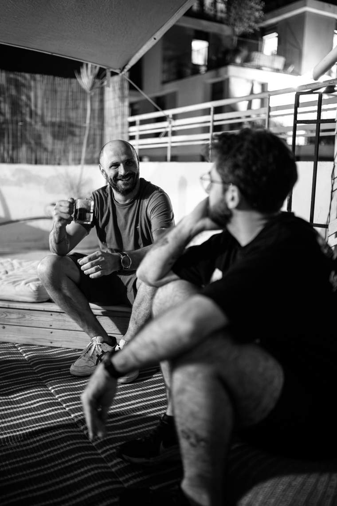
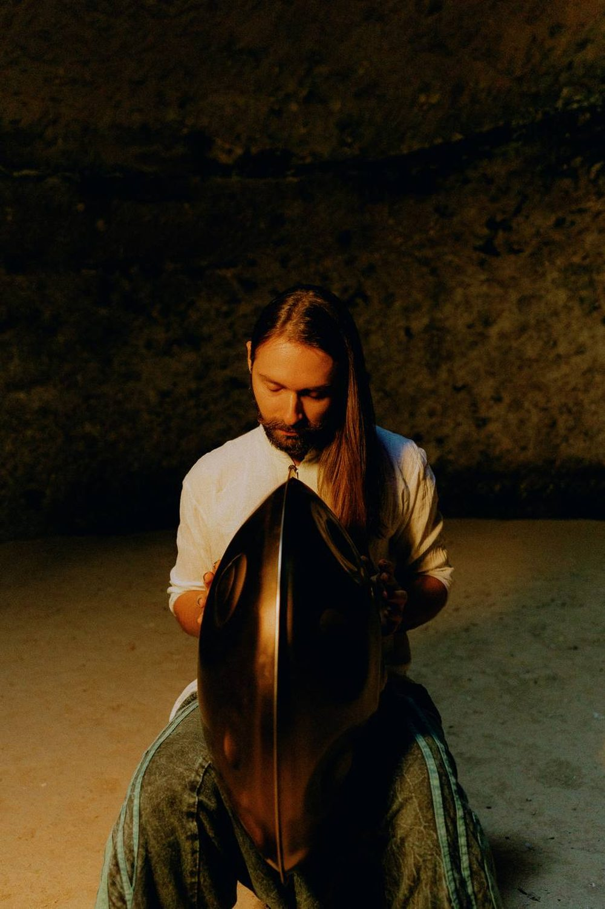
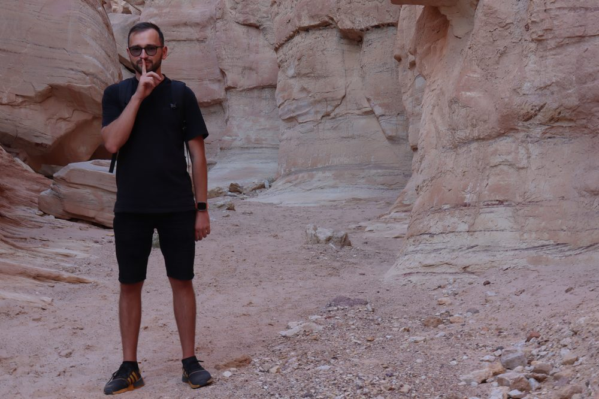
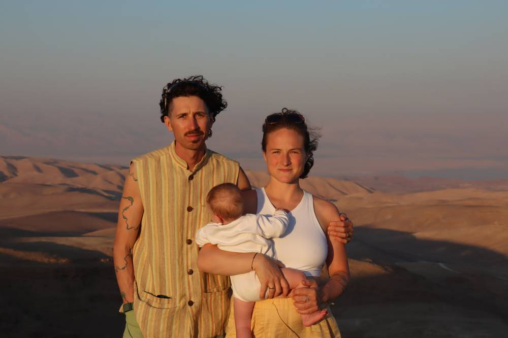
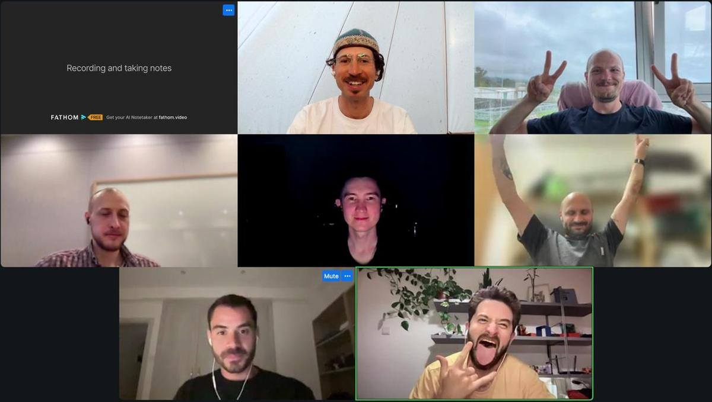
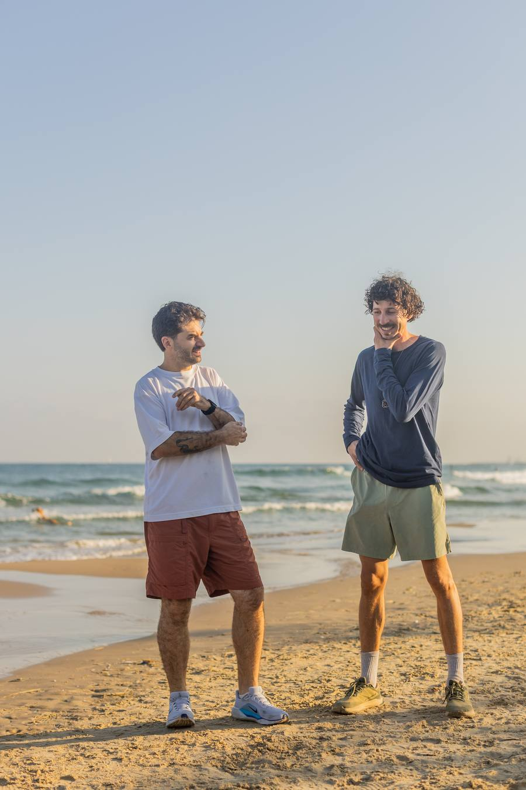

Full Moon Hike, 20 км
Ночной путь под полной луной — от заката в Иерусалиме до рассвета над Мёртвым морем. Трансфер, гид всю ночь, 20 км по дикой пустыне.
26 ноября 2026 · Иудейская пустыня · ₪390 / ~$130

Сильные, реализованные мужчины, которые растут друг об друга. Круг онлайн каждые две недели и совместные путешествия несколько раз в год.
Онлайн
Онлайн-группа, в которой растёшь за счёт честного разговора с другими мужчинами.
Как это устроено
Офлайн
Ретриты, походы, яхтинг, концерты — в Израиле и по всему миру.
Ближайшие путешествия
Кто здесь собирается
Предприниматели, руководители, инженеры. У каждого своё дело, семья, амбиции и аппетит к жизни.
Открытый разговор между мужчинами — то, чего в двадцать первом веке почти не осталось. Без масок, без конкуренции, без необходимости держать лицо. Именно этого сейчас не хватает больше всего, и именно от этого зависит мужское ментальное здоровье.
От того, что мужчина говорит честно, он не становится менее мужественным. Наоборот — жизнь становится качественнее и ярче. Здесь никто никого не учит жить: мужчины растут друг об друга и заряжают друг друга.

Онлайн
Мы встречаемся каждые две недели и говорим о том, что важно сейчас. Никакой конкуренции, оценок и ярлыков. Со временем возникает то, что нельзя купить — настоящее доверие и навык открытого общения.
Структура встречи
Как попасть
Тридцать минут с Никитой. Он расскажет, как всё устроено.
Приходишь в действующий круг и чувствуешь изнутри, что это такое.
Постоянная группа, встречи два раза в месяц. Три месяца — когда начинается глубина.
Офлайн
Многие приходят в комьюнити после первого совместного похода.

Ночной путь под полной луной — от заката в Иерусалиме до рассвета над Мёртвым морем. Трансфер, гид всю ночь, 20 км по дикой пустыне.
26 ноября 2026 · Иудейская пустыня · ₪390 / ~$130

Живой концерт Дмитрия Фильгуса в Малхаме — самой длинной соляной пещере мира. Подъём по склону, спуск под землю, чайная церемония и музыка в полной темноте.
21 ноября 2026 · Мёртвое море · ₪450 / ~$125

Традиционный поход на Хануку: четыре дня в древних горах, восхождение на гору Шломо, йога и медитация каждое утро, ночёвки в пустыне.
10–13 декабря 2026 · Эйлат · ₪1250 / ~$350

Кто ведёт
Не гуру и не учитель. Мужчина, который сам в процессе: своё дело, жена, дочь, жизнь на природе, ошибки и неудобные вопросы себе.
Провёл больше ста мужских кругов онлайн. Прошёл программу «A Circle of Men» в ManKind Project USA, сертифицированный коуч ICF, сертифицированный гид.

Наши встречи создают такую среду, в которой я ощущаю свою пустоту. И это ощущение мотивирует заполнять её.
Я научился глубже смотреть на свою жизнь и обсуждать темы, о которых раньше даже не задумывался.
Это именно то, чего мне не хватало. Если хочешь понять себя как мужчину в XXI веке — попробуй.
Шесть мужчин в зуме, два — два с половиной часа. Каждый рассказывает, что происходит в его жизни, остальные слушают и отвечают тем, что откликнулось. Без советов, заданий и упражнений, к которым нужно готовиться.
Так думает почти каждый до первой встречи. На практике тема находится сама: работа, отношения, дети, усталость, деньги, злость, планы. Если говорить не хочется — можно слушать, это нормально и в первый раз, и в пятый.
Терапия — работа один на один со специалистом над твоей историей. Круг — группа равных, где каждый говорит из своего опыта, а ведущий держит структуру. Никита не терапевт. Многие участники ходят и туда, и туда.
Мужчины 30–50 лет: предприниматели, руководители, инженеры, отцы. Живут в разных странах, встречаются онлайн на русском. Никита формирует состав вручную, чтобы люди сошлись по опыту и уровню.
Да, это первая договорённость каждой встречи. Ничего из сказанного не выносится наружу, встречи не записываются.
Встречи два раза в месяц, даты известны заранее. Пропуск не проблема, группа продолжает идти. Но чем регулярнее ты приходишь, тем больше это даёт — доверие набирается со временем.
Поэтому и начинаем со знакомства и пробной встречи. Ты успеваешь посмотреть изнутри до того, как берёшь абонемент.
Нет. Приключения открыты для всех мужчин, многие так и знакомятся с комьюнити.
Подкаст
Никита и Артём говорят в формате мужского круга: про отцовство, деньги, страх, тело, одиночество и всё, о чём мужчины обычно молчат.

Тридцать минут разговора с Никитой. Бесплатно и ни к чему не обязывает.
Письмо раз в пару недель: даты кругов, поездки, что читаем.